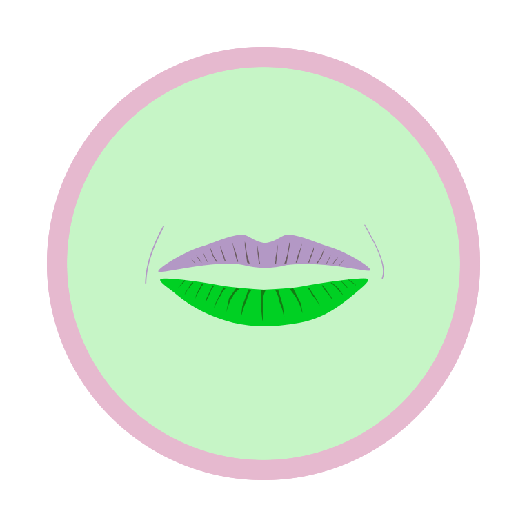

Hyperemesis Gravidarum (HG)
– Based on data and women's real stories –
[Disclaimer: Some parts are only displayed well with a horizontal display format]
Prevalence ~3
HG affects 0.3–10.8  of all pregnant women worldwide.
of all pregnant women worldwide.
It was supposed to be
the happiest time of their lives.
But for some, it can become a
NIGHTMARE
Women with HG may experience Nausea and Vomiting
just before the 4th week of pregnancy.
They can feel sick all the time, sometimes cannot even drink.
Then it is highly recommended to see a doctor !
A doctor can diagnose "Hyperemesis Gravidarum",
a severe form of Nausea and Vomiting during Pregnancy.
Then doctors can prescribe Anti-nausea Medication.
Affected women can experience multiple hospital visits

to obtain fluids against dehydration, medication and treatment.
HG can feel quite the same as dying.
Researchers recently studied why some women are
more affected by nausea and vomiting during pregnancy.

 Growth Factor (GDF15):
Growth Factor (GDF15):
A Hormone released by the growing Placenta is transmitted to the brain via bloodstream where it triggers the receptors in the Vomiting Center.
A new model explaining Hyperemesis Gravidarum
Recent Research found that, genetically, some women have a greater sensitivity to GDF15 which is linked to persistent Nausea and Vomiting.
Data
The following representation uses data from
"The Norwegian Mother, Father and Child Cohort Study (MoBa)"
(Norweg. "Den norske mor, far og barn-undersøkelsen")
MoBa is an ongoing long-term prospective cohort study (Enrollment: 1999−2008).
In the following, we will visualize data of 102,810 pregnant Norwegian women.

How do women with HG feel ?
(We will use the colors in the following visualization)
First, we look at women reported “Nausea with Vomiting”. The x-axis refers to the month of pregnancy.
Now, the y-axis shows the percentage of 102,810 mothers that participated in the MOBA study.
102,810
women
in total
This is an area chart over time (months).
The green area shows the percentage of women suffered from “Nausea with Vomiting” during pregnancy.
102,810
women
in total
Red shows the amount of women “hospitalized” due to long-term Nausea and Vomiting (overall 3 , in total 3084 women). However, researchers assume that many HG cases are not reported.
102,810
women
in total
As you can see, the percentage of women affected, decreases in the fourth month. But for women with HG it can last the entire pregnancy.
All
102,810
women
Side symptoms of women who report nausea with vomiting
|
Unusual Fatigue/Drowsiness
“I went to the doctor and he said it was completely normal.
Gradually, the nausea became more intense and I threw up at least 20 times a day.
I became sick, lethargic, unable to function.”
|
What is below the iceberg?
HG affects the whole body and mind.
The most common symptom is unusual fatigue and drowsiness.
Note that in the chart below we only show the subgroup of women reported nausea with vomiting.
For example, if women reported nausea with vomiting in the first month, 52 percent of them also reported unusual fatigue and drowsiness in the first month.
All
102,810
women
Side symptoms of women who report nausea with vomiting
|
Headache
“My initial tears of joy quickly turned to ones of pain, suffering, and anger.”
|
|
Unusual Fatigue/Drowsiness
“(...) needing to constantly visit
the hospital for being so weak that I would faint,
not be able to eat, or fall over from dizziness (...)”
|
Nausea and Vomiting over a longer period cause physical stress and can lead to life-threatening dehydration, which causes headaches.
All
102,810
women
Side symptoms of women who report nausea with vomiting
|
Headache
“No one knew my pain (...).”
|
|
Unusual Fatigue/Drowsiness
“I couldn’t work; I couldn’t walk; I was totally dead.”
|
|
Depression
“Pregnancy for me was traumatic, lonely, and a very depressing time.”
“I was mentally not there. I was rotting away in a hospital bed, losing weight and losing me. I lost myself completely.”
|
|
Sleeping Problems
“My vomiting was so severe that I barely
slept at night and constantly had my head in the toilet or a bucket.”
|
Sleeping problems and depression are psychologically serious problems that require immediate medical and psychological help.
(Note that the data for sleeping problems from month 4 to 8+ is missing)
How do the symptoms look like in women
who have not experienced HG?
We compare our focus group
(nausea with vomiting) ...
... with two other groups (right hand side):
1. reported nausea without vomiting
2. reported neither nausea nor vomiting
All
102,810
women
Side symptoms of women who report nausea with vomiting
|
Headache
“I was in so much pain”
|
|
Unusual Fatigue/Drowsiness
“(...) needing to constantly visit
the hospital for being so weak that I would faint,
not be able to eat, or fall over from dizziness (…)”
|
|
Depression
“Anxious. Isolated, lonely. Feeling sorry for myself. Thought I was going to die.”
“How can someone live like this and not die? I am having thoughts of self-harm, but I can’t help it." |
|
Sleeping Problems
“I’m so sick of being tired - it’s impossible to have uninterrupted sleep with this nausea.”
|
All
102,810
women
Side symptoms of women who report nausea with vomiting
|
Headache
“My pain was obvious to everyone around me.
The neighbors even called for a welfare check after hearing me scream while getting sick all the time.”
|
|
Unusual Fatigue/Drowsiness
“I’m so sick of being expected to perform well when I’m (...) falling asleep at my desk.”
|
|
Depression
“I considered taking my own life on multiple occasions, both during pregnancy and since.”
|
|
Sleeping Problems
“My vomiting was so severe that I barely
slept at night and constantly had my head in the toilet or a bucket.”
|
It can be traumatic to experience such a hard pregnancy. But when the mothers finally hold their child in their hands, they are happy and proud.
Don't hesitate to seek help if you have similar symptoms to these women !
Ask your doctor for Antacids or Anti-nausea Medication
that will alleviate your symptoms.
For more Information and Stories about HG experiences visit:
The Norwegian Mother, Father and Child Cohort Study is supported by the Norwegian Ministry of Health and Care Services and the Ministry of Education and Research. We are grateful to all the participating families in Norway who take part in this on-going cohort study.
Data Visualization, Storytelling, Illustration,
Animation, Design & Webdevelopment by Bea Budich
(budich[at]ovgu.de)
A supervised project by Universitetet i Bergen, Norway and
Otto-von-Guericke-Universität Magdeburg, Germany.